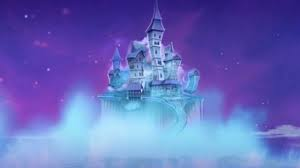

Um dia desses, dentro de um livro da biblioteca da escola, eu descobri uma carta antiga sobre uma joia perdida, escondida por riquezas e belezas naturais. Nessa carta, a autora deixa algumas pistas para encontrar essa joia e eu decidi segui-las!
voce começa sua jornada em monster high subindo o pico mais alto de boo york ao amanhecer para encontrar a primeira pista
Em ever after high, você visita a histórica escola dos famosos contos de fadas. Na carta, uma das pistas indica que para localizar a entrada para a joia perdida você deve procurar a próxima pista em um dos pontos turísticos da escola Por qual você começa?
Você decide que não vale muito a pena essa exploração e volta pra casa.mais voce sempre se pergunta se valia a pena essa jornada.
Na sala de amagia e bruxaria você descobre uma pista sobre o paradeiro da joia perdida que indicava para a escola de montros chamada monster high.
no sotão voce descobre coisas fascinantes e magicas,voce segue um corredor so que ela leva a um beco sem saída.
em monster high. em busca da joia perdida voce se depara com varias salas,voce decide ou ir para diretoria ou ir para um porão.
De volta às salas,voce finalmente enconta as pistas que procurava e voce decide ir atras!
no porão voce finalmente encontra a ultima pista da joia.
na diretoria voce não acha nada de importanta la entao tu decide ir para o porão.
no sotão quando voce pega o ultimo bilhete,se abre um portal para um lugar meio macabro que não da em nenhum lugar,tu olha para tras e ve um barco fantasma e tu decide entrar la e cuidar da joia para não cair em mãos erradas
escolhenddo entrar no portal voce descobre as maravilhas que lhe aguardão.